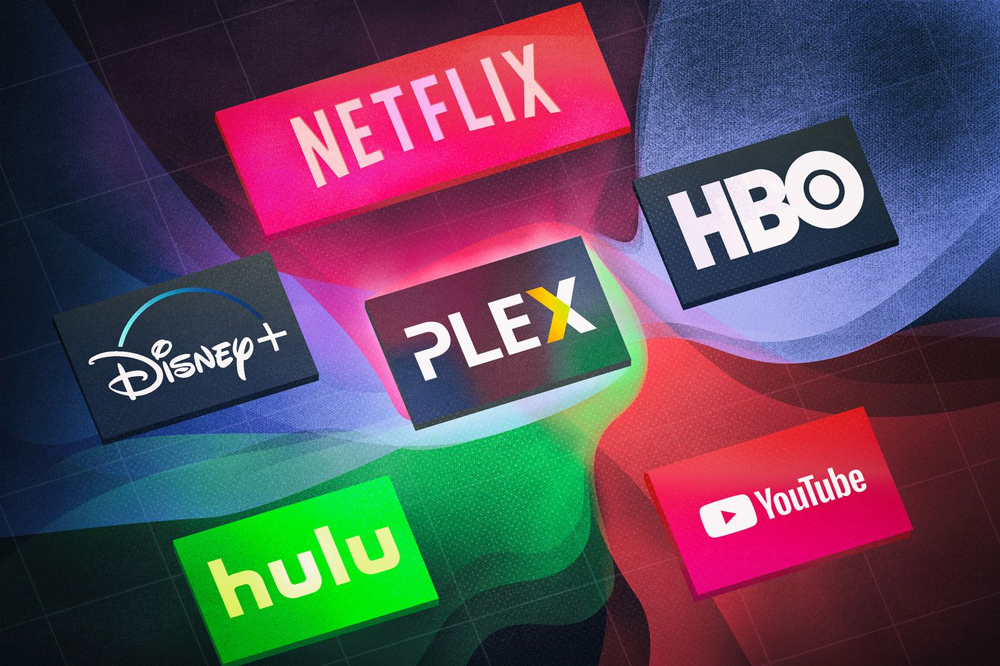
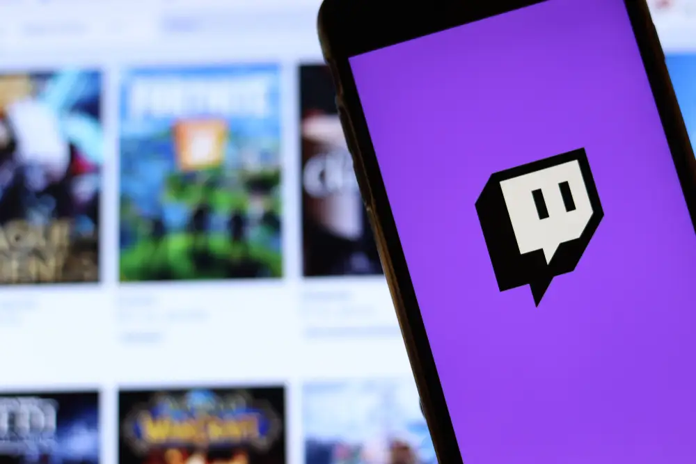

The Constant Battle Streaming Services Fight
20 mins
While as a fan big events coming up makes you unbelievbly excited, in my Blog Post we see the massive battle streaming services Fight... and what is on the line

Parasocial
15 mins
In this episode of Parasocial we investigate parasocial relationships between content creators and their followers... is it too distructive or is it an unavoidable side effect of platforms like twitch.
[INSERT VIDEO NAME]
25 mins
[INSERT VIDEO DESCRIPTION]
The Angelos Ministry
20 mins
Non-profit organization I co-founded with my brother to raise money to build a school in Atfih, Egypt. Feel free to go through our website and donate.